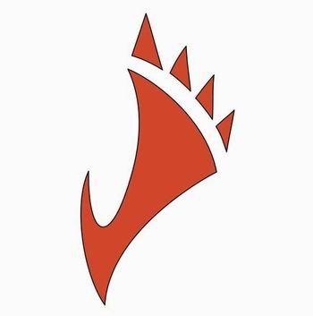
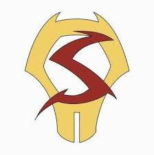
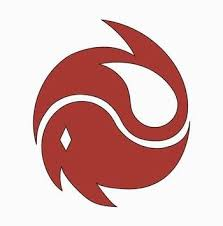
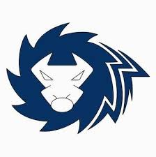
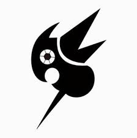
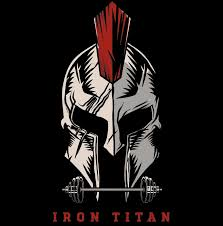

Barefoot, özgür ruhlu ve enerjik bir takım. Her zaman cesur hareketler yapmayı severler ve rakiplerini şaşırtmak için yaratıcı stratejiler kullanırlar.

Beats, ritmik ve akıcı oyunlarıyla dikkat çeker. Topla dans eder gibi hareket ederler ve her zaman takım oyunu oynamayı tercih ederler.

Bu takım, strateji ve güç birleştirerek oyunlarını domine eder. Onlar için her şey bir meydan okumadır.

Steel Warriors, güçlü bir savunma hattına sahip ve oyunlarındaki disipliniyle tanınırlar. Her zaman kuralına uygun oynarlar.

Thunder Strike, hız ve güç birleşimi ile rakiplerini alt ederler. Oyuncuları, rakiplerinin zayıf noktalarını hızlıca bulurlar.

Iron Titans, gücün ve stratejinin birleştiği bir takım. Her zaman dikkatli bir şekilde hareket eder ve rakiplerini stratejik hamlelerle alt ederler.